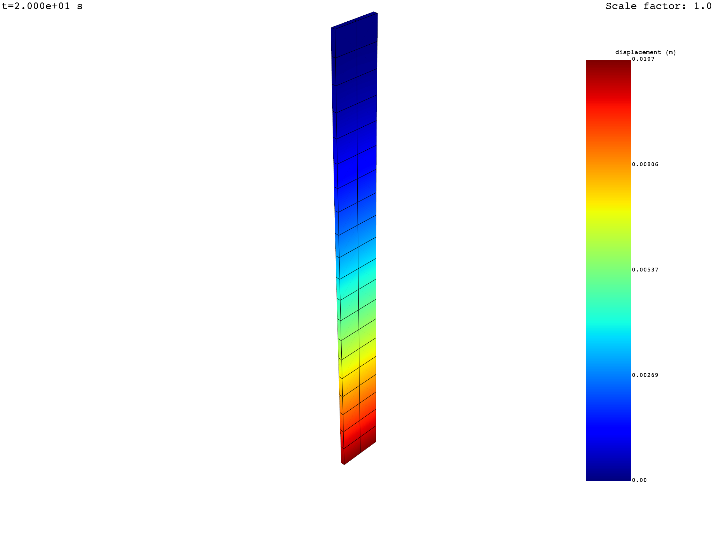
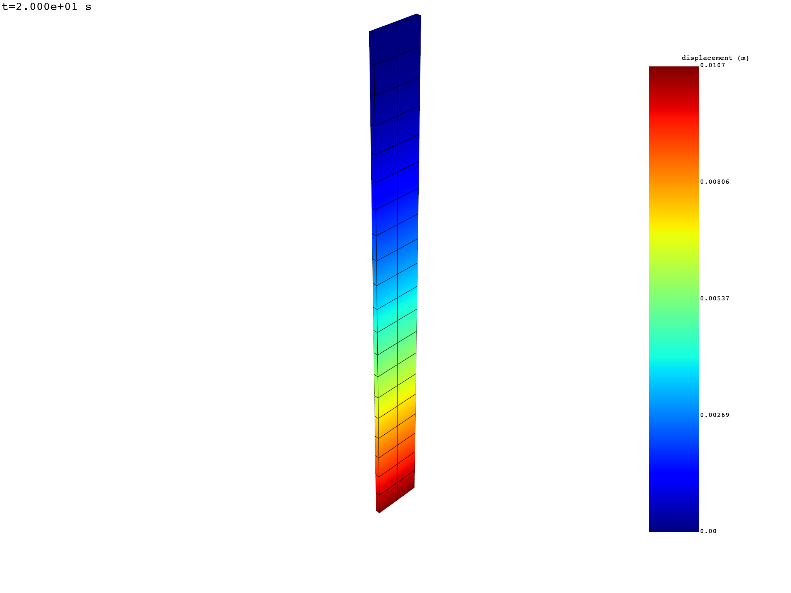
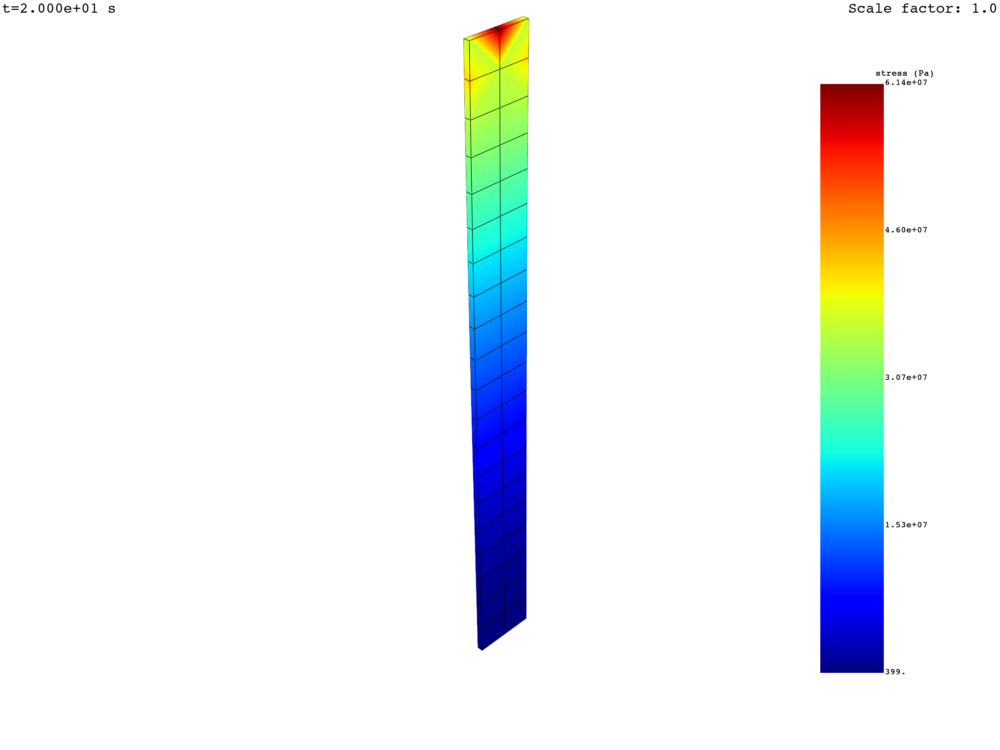
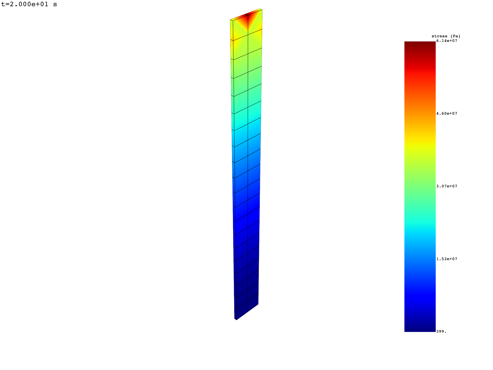
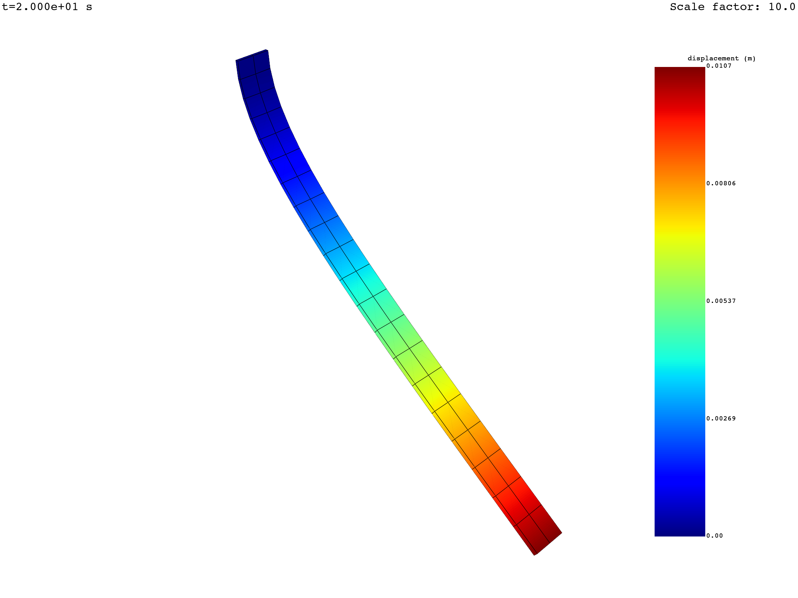
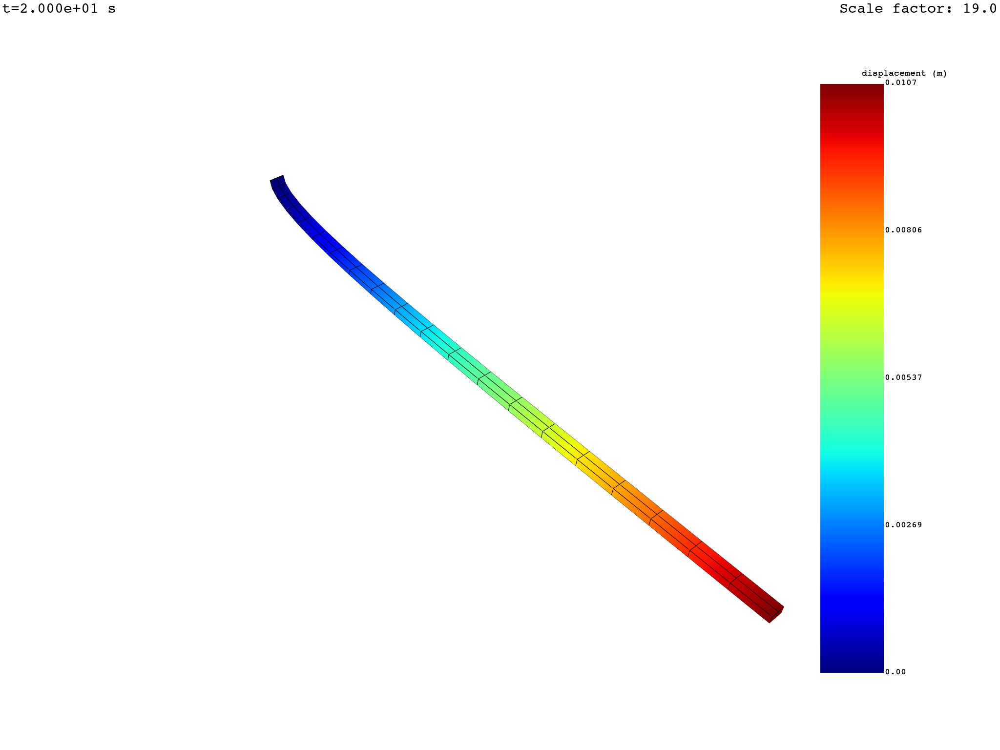
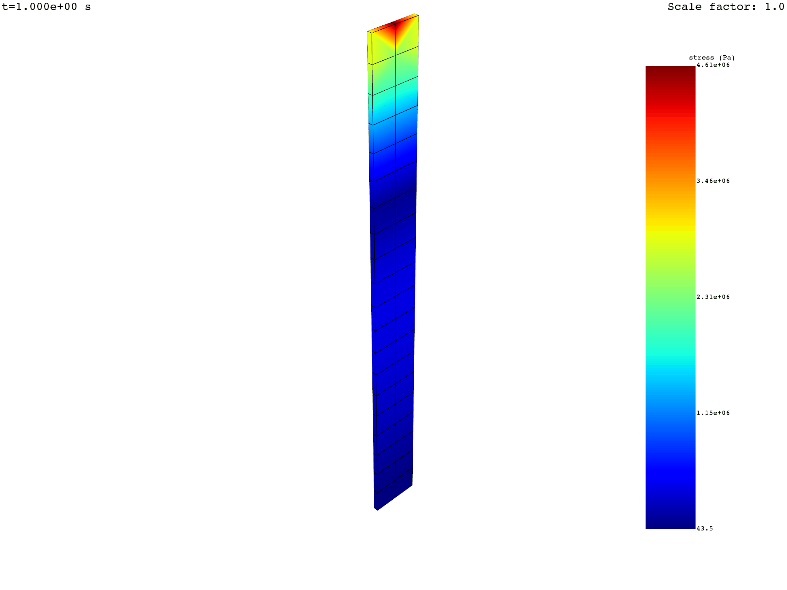
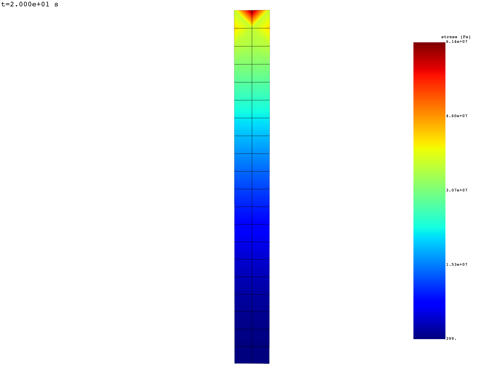
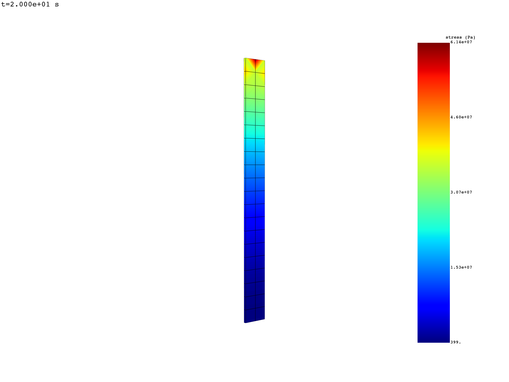

Note
Go to the end to download the full example code.
Animate data over time#
MAPDL LS-DYNA FLUENT CFX
This tutorial demonstrates how to create 3D animations of data in time.
To animate data across time, the data must be stored in a
FieldsContainer with
a time label.
Get the result files#
For this tutorial, we use a case available in the
examples module.
For more information about how to import your own result file in DPF, see
the Import Data tutorial section.
from ansys.dpf import core as dpf
from ansys.dpf.core import examples
result_file_path = examples.find_msup_transient()
model = dpf.Model(data_sources=result_file_path)
Define a time scoping#
To animate across time, define the time steps of interest.
This tutorial retrieves all time steps available in
TimeFreqSupport,
but you can also filter them. For more information on how to define a scoping,
see the narrow_down_data tutorial in the Import Data
section.
time_steps = model.metadata.time_freq_support.time_frequencies
Extract the results#
Extract the results to animate. In this tutorial, we extract displacement and stress results.
Note
Only the elemental, nodal, or faces locations are supported
for animations. overall and elemental_nodal locations are not
currently supported.
Get the displacement fields (already on nodes) at all time steps.
disp_fc = model.results.displacement(time_scoping=time_steps).eval()
print(disp_fc)
DPF Fields Container
with 20 field(s)
defined on labels: time
with:
- field 0 {time: 1} with Nodal location, 3 components and 393 entities.
- field 1 {time: 2} with Nodal location, 3 components and 393 entities.
- field 2 {time: 3} with Nodal location, 3 components and 393 entities.
- field 3 {time: 4} with Nodal location, 3 components and 393 entities.
- field 4 {time: 5} with Nodal location, 3 components and 393 entities.
- field 5 {time: 6} with Nodal location, 3 components and 393 entities.
- field 6 {time: 7} with Nodal location, 3 components and 393 entities.
- field 7 {time: 8} with Nodal location, 3 components and 393 entities.
- field 8 {time: 9} with Nodal location, 3 components and 393 entities.
- field 9 {time: 10} with Nodal location, 3 components and 393 entities.
- field 10 {time: 11} with Nodal location, 3 components and 393 entities.
- field 11 {time: 12} with Nodal location, 3 components and 393 entities.
- field 12 {time: 13} with Nodal location, 3 components and 393 entities.
- field 13 {time: 14} with Nodal location, 3 components and 393 entities.
- field 14 {time: 15} with Nodal location, 3 components and 393 entities.
- field 15 {time: 16} with Nodal location, 3 components and 393 entities.
- field 16 {time: 17} with Nodal location, 3 components and 393 entities.
- field 17 {time: 18} with Nodal location, 3 components and 393 entities.
- field 18 {time: 19} with Nodal location, 3 components and 393 entities.
- field 19 {time: 20} with Nodal location, 3 components and 393 entities.
Get the stress fields on nodes at all time steps.
Request nodal location as the default elemental_nodal location is not
supported for animations.
stress_fc = (
model.results.stress.on_location(location=dpf.locations.nodal)
.on_time_scoping(time_scoping=time_steps)
.eval()
)
print(stress_fc)
DPF Fields Container
with 20 field(s)
defined on labels: time
with:
- field 0 {time: 1} with Nodal location, 6 components and 393 entities.
- field 1 {time: 2} with Nodal location, 6 components and 393 entities.
- field 2 {time: 3} with Nodal location, 6 components and 393 entities.
- field 3 {time: 4} with Nodal location, 6 components and 393 entities.
- field 4 {time: 5} with Nodal location, 6 components and 393 entities.
- field 5 {time: 6} with Nodal location, 6 components and 393 entities.
- field 6 {time: 7} with Nodal location, 6 components and 393 entities.
- field 7 {time: 8} with Nodal location, 6 components and 393 entities.
- field 8 {time: 9} with Nodal location, 6 components and 393 entities.
- field 9 {time: 10} with Nodal location, 6 components and 393 entities.
- field 10 {time: 11} with Nodal location, 6 components and 393 entities.
- field 11 {time: 12} with Nodal location, 6 components and 393 entities.
- field 12 {time: 13} with Nodal location, 6 components and 393 entities.
- field 13 {time: 14} with Nodal location, 6 components and 393 entities.
- field 14 {time: 15} with Nodal location, 6 components and 393 entities.
- field 15 {time: 16} with Nodal location, 6 components and 393 entities.
- field 16 {time: 17} with Nodal location, 6 components and 393 entities.
- field 17 {time: 18} with Nodal location, 6 components and 393 entities.
- field 18 {time: 19} with Nodal location, 6 components and 393 entities.
- field 19 {time: 20} with Nodal location, 6 components and 393 entities.
Animate the results#
Animate the results with
FieldsContainer.animate().
You can animate on a deformed mesh (color map + mesh deformation) or on a
static mesh (color map only).
Default behavior of animate():
Displays the norm of the data components.
Displays data at the top layer for shells.
Displays the deformed mesh when animating displacements.
Displays the static mesh for other result types.
Uses a constant uniform scale factor of 1.0 when deforming the mesh.
You can animate any result on a deformed geometry by providing displacement
results in the deform_by parameter. It accepts a result object, an
Operator (must evaluate to a
FieldsContainer of the same length), or a FieldsContainer of the same
length.
Note
The behavior of animate() is defined by a
Workflow that it creates
internally and feeds to an
Animator.
This workflow loops over a field of frame indices and for each frame
generates a field of norm contours to render, as well as a displacement
field to deform the mesh if deform_by is provided.
Animate the displacement results — deformed mesh#
disp_fc.animate()

Animate the displacement results — static mesh#
Use deform_by=False to animate on a static mesh.
disp_fc.animate(deform_by=False)

Animate the stress — deformed mesh#
Pass the displacement FieldsContainer to deform_by.
stress_fc.animate(deform_by=disp_fc)

Animate the stress — static mesh
stress_fc.animate()

Change the scale factor#
The scale factor can be:
A single number for uniform constant scaling.
A list of numbers (same length as the number of frames) for varying scaling.
Uniform constant scaling#
uniform_scale_factor = 10.0
disp_fc.animate(scale_factor=uniform_scale_factor)

Varying scaling#
varying_scale_factor = [float(i) for i in range(len(disp_fc))]
disp_fc.animate(scale_factor=varying_scale_factor)

Save the animation#
Use the save_as argument with a target file path. Accepted extensions are
.gif, .avi, and .mp4.
For more information see
pyvista.Plotter.open_movie.
stress_fc.animate(deform_by=disp_fc, save_as="animate_stress.gif")

Control the camera#
Control the camera with the cpos argument.
A camera position is a combination of a position, a focal point (target), and an upwards vector:
camera_position = [
[pos_x, pos_y, pos_z], # position
[fp_x, fp_y, fp_z], # focal point
[up_x, up_y, up_z], # upwards vector
]
The animate() method accepts a single camera position or a list of camera
positions (one per frame).
Note
A useful technique for defining a camera position: do a first interactive
plot with return_cpos=True, position the camera as desired, and
retrieve the output of the plotting command.
Fixed camera#
cam_pos = [[0.0, 2.0, 0.6], [0.05, 0.005, 0.5], [0.0, 0.0, 1.0]]
stress_fc.animate(cpos=cam_pos)

Moving camera#
import copy
cpos_list = [cam_pos]
for i in range(1, len(disp_fc)):
new_pos = copy.deepcopy(cpos_list[i - 1])
new_pos[0][0] += 0.1
cpos_list.append(new_pos)
stress_fc.animate(cpos=cpos_list)

Additional options#
You can use additional PyVista arguments, such as:
show_axes=True/show_axes=Falseto show or hide the coordinate system axis.off_screen=Trueto render off-screen for batch animation creation.framerateto change the frame rate.qualityto change the image quality.
Total running time of the script: (0 minutes 55.835 seconds)